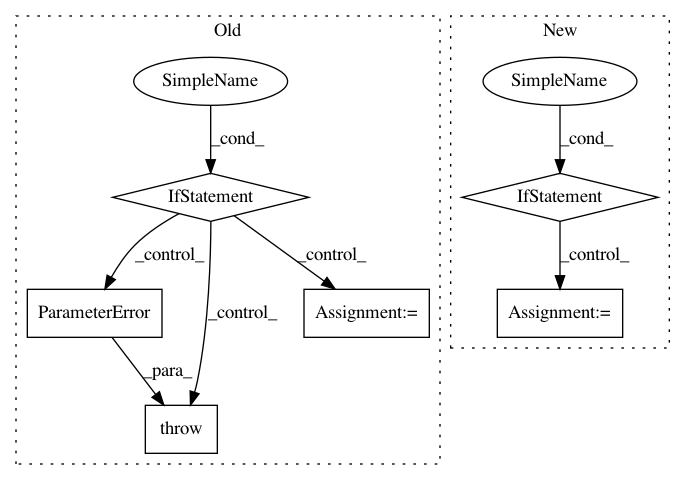

dca2732e5299dd7c599e8cb8673b39f8ccfc1fea,librosa/core/spectrum.py,,istft,#Any#Any#Any#Any#Any#Any#,195
Before Change
if hop_length is None:
hop_length = int(win_length / 4)
if window is None:
// Default is an asymmetric Hann window.
ifft_window = scipy.signal.hann(win_length, sym=False)
elif six.callable(window):
// User supplied a windowing function
ifft_window = window(win_length)
else:
// User supplied a window vector.
// Make it into an array
ifft_window = np.asarray(window)
// Verify that the shape matches
if ifft_window.size != n_fft:
raise ParameterError("Size mismatch between n_fft and window size")
// Pad out to match n_fft
ifft_window = util.pad_center(ifft_window, n_fft)
n_frames = stft_matrix.shape[1]
expected_signal_len = n_fft + hop_length * (n_frames - 1)
After Change
if hop_length is None:
hop_length = int(win_length // 4)
if window is None:
// Default is an asymmetric Hann window.
window = hann_asym
ifft_window = get_window(window, win_length)
// Pad out to match n_fft
ifft_window = util.pad_center(ifft_window, n_fft)
In pattern: SUPERPATTERN
Frequency: 3
Non-data size: 6
Instances
Project Name: librosa/librosa
Commit Name: dca2732e5299dd7c599e8cb8673b39f8ccfc1fea
Time: 2016-09-30
Author: brian.mcfee@nyu.edu
File Name: librosa/core/spectrum.py
Class Name:
Method Name: istft
Project Name: librosa/librosa
Commit Name: b2e82574eb7e7292741ece09ec9eb286e9ea4168
Time: 2020-05-22
Author: bmcfee@users.noreply.github.com
File Name: librosa/util/utils.py
Class Name:
Method Name: frame
Project Name: librosa/librosa
Commit Name: dca2732e5299dd7c599e8cb8673b39f8ccfc1fea
Time: 2016-09-30
Author: brian.mcfee@nyu.edu
File Name: librosa/core/spectrum.py
Class Name:
Method Name: stft